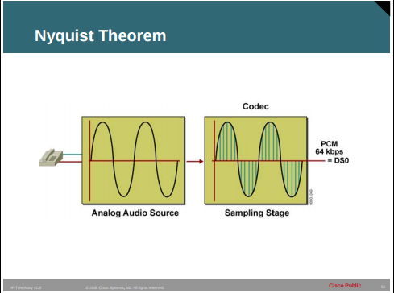

Voice sampling is a very interesting topic as it tells how the voice data (analog) is converted to digital data.
Terms Used:
When converting an voice (analog) signal , there are two things to focus: sampling and quantization. Together, they determine the quality of the digitized sound.
Sampling
: is about the sampling rate — i.e. how many samples per second you use to encode the sound. The sampling rate must be double the highest frequency in the signal so that signal neither appears choppy not too smooth.Quantization
: is about how many bits you use to represent each sample. The number of bits determines the number of different values you can represent with each sample.Nyquist Theorem
Digital signal technology is based on the premise stated in the Nyquist Theorem: when a signal is instantaneously sampled at the transmitter in regular intervals and has a rate of at least twice the highest channel frequency, then the samples will contain sufficient information to allow an accurate reconstruction of the signal at the receiver

PC: Cisco
Example: Nyquist Theorem
While the human ear can sense sounds from 20 to 20,000 Hz, and speech encompasses sounds from about 200 to 9000 Hz,the telephone channel was designed to operate at about 300 to 3400 Hz. This economical range carries enough fidelity to allow callers to identify the party at the far end and sense their mood.
Nyquist decided to extend the digitization to 4000 Hz, to capture higher-frequency sounds that the telephone channel may deliver.
Therefore, the highest frequency for voice is 4000 Hz, or 8000 samples per second; that is, one sample every 125 microseconds.
Several people have experienced that voice over phone is not exactly similar to their own voice. If we increase sampling rate and number of bits for quantization( that means also increasing number of levels), then the similarity in the voice will improve.
In other words we can say that we will send more information over the voice channel to improve the user voice experience.